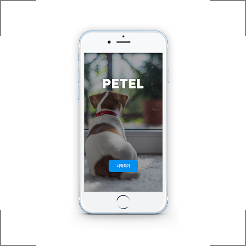
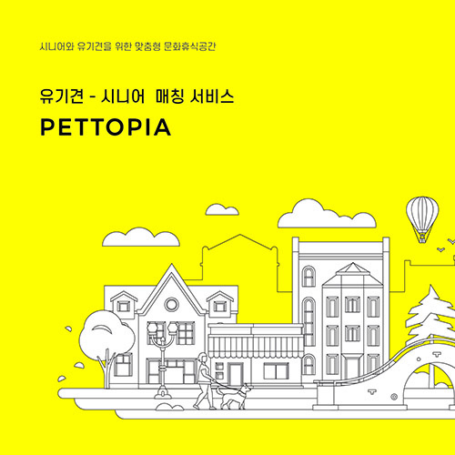

정약용이 저술한 목민심서를 주제로 웹 페이지를 제작하였다. 총 12조로 구성된 목민심서는 자칫 책의 이름만 들어도 시작부터 따분해질 수 있어, 각 조에 해당하는 이야기들과 함께 연상되는 삽화를 매치시켜 누가 보아도 쉽게 이해할 수 있도록 하였다.

Interactive Media PETEL
반려동물과 여행을 하는 사람들이 함께할 호텔을 찾지 못해 어려워하고 있다. 때문에 사람들은 호텔마다 직접 문의하여 동행가능 여부를 확인하고 있는 실정이다. PETEL은 이러한 불편함을 해결하고자 기획된 앱 서비스로, 원하는 여행지를 선택하면 쉽고 빠르게 반려동물과 여행이 가능한 호텔을 찾아준다. 또한 예약과 결제, 택시호출 등의 기능도 함께 지원한다.

Multimedia Design PETTOPIA
펫토피아는 APP과 연동하여 운영되는 신개념 유기보 호시설이다. 기존의 보호소는 위생·건강·시공간 제 약에 따른 재파양 문제 등 수많은 문제점을 안고있다. 우리는 이러한 문제점을 파악하여 유기견과 많은 시간 을 함께 보낼 수 있는 ‘시니어’들과 유기견을 매칭, 공 간을 쉐어하여 하나의 문화시설로 작용. 시니어와 유 기견 모두의 인식 개선에 이바지하길 바라며 펫토피아 를 기획하게 되었다.